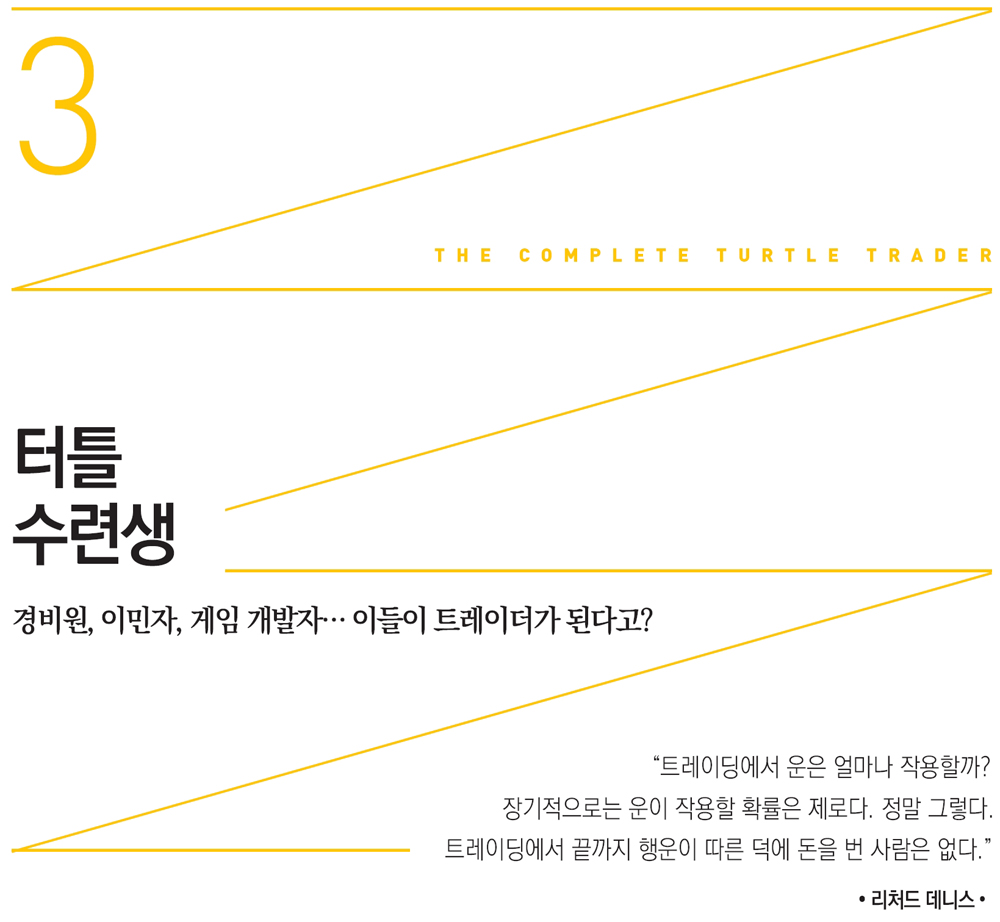

1983년 겨울에 시작된 리처드 데니스의 터틀 수련생 실험에 대한 얘기가 나올 때마다 이를 아는 사람들이 십중팔구 에디 머피Eddie Murphy와 댄 애크로이드Dan Aykroyd 주연의 〈대역전Trading Places〉을 떠올리는 일이 수년간 이어졌다. 지난 20년간 극장에서든 TV에서든 이 영화를 본 관객은 수백만에 이른다.
이 영화의 아이디어는 1893년에 발표된 마크 트웨인의 단편소설 〈100만 파운드 은행권The 1,000,000 Bank Note〉에서 나온 듯하다. 이 유명한 소설은 영문을 모른 채 호주머니에 100만 파운드 은행권을 갖게 된 아주 정직한 미국인을 런던에 데려다놓았을 때 어떤 일이 벌어지는지를 다룬 내용이다.
〈대역전〉에서는 백만장자 상품 브로커 형제인 모티머 듀크와 랜돌프 듀크가, 한 귀족 출신(댄 애크로이드가 분한 루이스 윈스럽 3세)을 범죄자로 만들고 거리의 불법행상(에디 머피가 분한 빌리 레이 발렌타인)을 훌륭한 트레이더로 변신시킬 수 있는지를 놓고 내기를 한다. 영화에서 모티머 듀크는 흄과 로크의 이론에 반론을 제기한다. “그의 유전자라면 루이스 윈스럽을 어느 위치에든 올려놓을 수 있어요. 심지어 꼭대기에 올리는 것도 가능합니다. 경주마처럼 잘 기르면 됩니다. 유전자가 좋기 때문이죠.”
리처드 데니스의 터틀 실험 전에 이 영화 시나리오가 나왔다고 백퍼센트 확신하던 차에 시나리오 작가인 허셀 웨잉로드Herschel Weingrod가 전말을 밝혔다. 그는 대본을 완성한 1982년 당시 리처드 데니스에 대해 전혀 들어보지 못했다고 단언했다. 1980년대 초부터 시카고 트레이더들에 대해 조사도 하고 대본도 썼는데 리처드 데니스에 대해서는 금시초문이었다는 것이다. 믿기 어려운 얘기다.
하지만 영화의 기본 내용이 리처드 데니스의 실험에 영향을 끼쳤다고 보는 것이 논리적으로 가장 타당하다. 이는 필자만의 생각이 아니다. 리처드 데니스의 수련생 중 한 명인 마이크 카Mike Carr도 실험에 대한 얘기가 나올 때마다 영화 내용 같다고 말한 사람을 여럿 접했다. “터틀 실험에 대해 설명해주자 이들은 이렇게 말했습니다. ‘아, 〈대역전〉이라는 영화 같네요.’ 물론 내용 전개가 비슷합니다. 리처드 데니스와 빌 에크하르트에게 확인해봐야 하겠지만 정말 우연의 일치가 아닐 수 없죠.”
마이크 카가 그렇게 말한 이유를 쉽게 추측할 수 있다. 리처드 데니스는 영화가 구상되기 전부터 경험론을 신봉했다. 적어도 영화는 그가 터틀 실험을 실행에 옮기도록 하는 데 촉매 역할을 했음에 틀림없다. 리처드 데니스는 터틀 실험이 영화 〈대역전〉의 영감을 받은 것이냐는 질문에 아니라고 대답했다. “결코 아닙니다. 사실 그 영화는 터틀 실험 뒤에 개봉되었습니다. 그 영화 내용이 현실 세계에서도 가능하면 얼마나 좋겠어요! 정말 재미있게 봤습니다. 저희가 터틀 실험을 한 까닭은 매우 논리적인 빌 에크하르트를 포함해 사람들이 타고나야 트레이딩을 잘할 수 있다고 믿었기 때문입니다. 직감과 트레이딩에 대해 곰곰이 생각해봤는데 저는 이 둘이 서로 어울리지 않는 것 같았습니다.”
리처드 데니스의 세 번째 제자인 마이크 섀넌Mike Shannon은 마이크 카의 생각과 전혀 달랐다. “솔직히 말씀드리죠. 그 빌어먹을 영화가 터틀 실험에 영향을 끼쳤다고 맹신하는 사람들이 있습니다. 무조건 그렇다고 생각하죠. 그가 부인하든 말든 당연히 그렇다고 생각하는 겁니다.”
리처드 데니스가 그렇지 않다고 했지만 터틀 실험과 영화는 우연의 일치라고 보기에는 너무나도 비슷하다. 그는 자신의 논쟁거리를 스크린 속 랜돌프와 모티머 듀크 형제가 시험하는 것을 보았다. 랜돌프는 에디 머피의 지위는 불우한 환경의 산물이라 굳게 믿은 반면, 모티머는 이것이 터무니없는 생각이라 여겼다.
영화와는 달리 리처드 데니스와 윌리엄 에크하르트가 실험을 하게 된 계기가 정확히 무엇인지 (설령 있다고 해도) 알려지지 않았다. 그렇지만 그의 터틀 실험이 구상되기 전에 〈대역전〉의 흥행수입은 1억 달러를 넘었다.
리처드 데니스는 이제 제2의 윌리 웡카가 되려했다. 윌리 웡카가 아이들을 초콜릿 공장으로 유인했듯 그도 사람들을 자신의 ‘공장’인 C&D 커머더티스로 불러들이기 시작했다. 위험이 따르는 일이었다. 수련생들이 그의 기대를 저버릴 수도 있었고 더 나아가 그의 비법을 훔쳐갈 수도 있었다. 하지만 그는 주저하지 않았다. “실험을 ‘말리는’ 사람도 있었습니다. 하지만 저는 (트레이딩 기법은) 전수할 수 있다고 생각했습니다. 가르칠 수 있고 신비롭지도 않다는 게 확실해보였습니다. 신비스러울 것이 없다면 다른 사람들도 그렇게 하게 할 수 있다고요. 더 이상 쓸데없는 논쟁으로 시간을 허비하고 싶지 않았고, 트레이딩에 수수께끼 같은 대단한 비법 따위는 없다는 점도 증명하고 싶었습니다.”
어쩌다 …… 인생역전
지원자들은 리처드 데니스의 관심을 얻기 위해 온갖 노력을 했다. 수련생에 선발된 사람들이 기울인 노력 중 짐 멜닉Jim Melnick의 경우가 가장 두드러지고 특이했다. 과체중의 그는 보스턴 노동자 출신으로 시카고 교외 술집에서 일했다. 짐은 작정하고 리처드 데니스와 최대한 가까워지려고 했다. 그는 사실 리처드에 대한 얘기를 듣고 시카고로 건너왔고 결국 시카고상품거래소 경비원이 되어 리처드 데니스가 건물에 들어올 때마다 “데니스 선생님, 안녕하세요.”라고 인사했다. 때마침 구인광고가 났고 짐 멜닉도 수련생으로 선발되었다.
능력 있는 백만장자인 리처드 데니스가 거리의 사람을 데려다 새 삶을 시작할 기회를 준 셈이었다. 짐 멜닉 이야기는 그야말로 무일푼에서 거부가 된 대표적 사례다. 그는 리처드 데니스에게 다가가면 기회가 생길 수도 있다고 확신했을까? 물론 그렇지는 않았겠지만 바람은 있었을 것이다. 그 믿음이 전조가 되었다.
리처드 데니스의 다른 수련생은 짐 멜닉이 ‘아주 평범한’ 인물이었다고 밝혔다. “그는 꼭 트럭 운전사 같았습니다. 그런데 마술처럼 ‘터틀 수련생’이 되었습니다. 어떻게 왜 그렇게 되었는지 짐 멜닉 본인도 의아해하고 있습니다. 저도 마찬가지고요.”
열여섯에 학교를 그만두고 배우가 된 마이크 섀넌도 문을 두드렸다. 그는 이렇게 회고했다. “저는 브로커로 일했습니다. 하지만 아주 형편없는 상품 브로커였습니다.” 그는 수많은 플로어 브로커로부터 구인광고 소식을 들었다. 그렇지만 자신의 경력은 보잘 것 없었다. 해결책을 찾아야 했다. “거짓 이력서를 꾸며 리처드 데니스에게 보냈습니다. 합격하기 위해 대담한 짓을 했죠.” 보통은 이력서 내용이 거짓이면 해고되거나 적어도 채용되지 못한다. 하지만 별난 C&D 커머더티스 대표에게 이런 비상식이 통했다.
반면, 노틀담대학 출신으로 TV 드라마 《오지와 해리엇Ozzie and Harriet》에서 튀어나온 것 같은 짐 디마리아Jim DiMaria는 지원 당시 트레이딩 플로어에서 리처드 데니스와 함께 일하고 있었다. 짐 디마리아는 가끔씩 트레이딩 플로어에서 1천 무더기(선물 1천 계약 같은 엄청난 주문량의 속칭) 매매주문이 들어왔다는 사실을 기억했다. 누구인지 궁금했다. ‘누가 이렇게 엄청난 주문을 내는 것일까?’ 부유한 치과의사라는 말도 있었는데 종종 트레이딩을 하는 의사들이 있었기 때문에 그럴듯한 추측이라 생각했다. 그렇지만 보고 들은 애기를 종합해보니 ‘부유한 치과의사’라고 여겼던 고객은 바로 리처드 데니스였다.
리처드 데니스가 경비원과 플로어 트레이더만 찾은 것은 아니었다. 고학력자도 원했다. 마이클 카발로Michael Cavallo는 하버드대학 MBA 출신이다. 덥수룩한 갈색머리에 금속테 안경을 쓴 마이클이 자신의 인생을 바꿀 수도 있는 광고에 대해 알아챘을 때 보스턴의 잘나가는 대기업에서 일하고 있었다.
마이클 카발로는 광고를 접했을 때 이미 리처드 데니스에 대해 알고 있었다. 그는 다음과 같이 회상했다. “광고를 처음 봤을 때 의자에서 떨어질 뻔했습니다. 그는 뛰어난 유격수를 찾고 있었습니다. 믿을 수 없었죠. 바로 제가 꿈꾸던 직업이었으니까요. 그래서 서둘러 지원했습니다.”
잠재적 수련생들이 실험에 대해 알게 되기까지 정말 뜻밖의 경우가 많았다. 전직 미공군 조종사였던 얼 키퍼Erle Keefer를 터틀로 이끈 건 정말 우연이었다. 그가 데니스의 신문광고를 본 것은 뉴욕 시내 사우나에서 쉬고 있을 때였다.
당시 《대역전》에서 열연했던 제이미 리 커티스Jamie Lee Curtis도 남자친구와 함께 사우나장에서 쉬고 있었다. 그때 얼 키퍼는 〈배런스〉를 읽고 있었다. “광고를 봤을 때 저는 리처드 데니스를 이미 알고 있었기 때문에 이렇게 중얼거렸습니다, ‘우와, 결국 일을 저질렀군.’ 하지만 그는 자신이 합격할 가능성이 아주 작다고 생각했다.
1980년대 초 상품 선물거래는 완전히 남자들만의 세계였지만 여성 지원자도 있었다. 여성 앵커 케이티 쿠릭Katie Couric처럼 작지만 당찬 이미지의 리즈 체블Liz Cheval도 그중 한명이었다. 분명 그녀는 자신이 여성이기에 눈에 확 띌 것임을 알았으리라. 당시 리즈 체블은 증권회사에서 일했지만 영화 제작을 적극 고려하고 있었다.
리즈 체블의 직장 상사였던 브래들리 로터Bradley Rotter도 이 모집이 흔치 않은 기회임을 알았다. “저는 이전부터 리처드 데니스에게 제 돈도 맡겼습니다. 잘한 결정이었죠. 리즈 체블이 제가 다가와 지원을 고려하고 있다며 지원해야 할지 말지 묻더군요. 두말할 것도 없다고 말했습니다. 일생일대의 기회였으니까요.”
그즈음 작은 변호사 사무실을 차려 일하고 있던 제프 고든Jeff Gordon도 우연히 신문을 뒤적이다 광고를 보았다. 《기숙사 대소동Revenge of the Nerds》에 캐스팅된 적이 있는 호리호리한 체격의 그도 이것이 엄청난 기회가 될 것을 직감했다. “모두가 리처드 데니스처럼 트레이딩을 잘해 떼돈을 벌기를 원하지.” 그가 설레는 마음으로 인생을 뒤바꿀 이력서를 쓰기로 결정한 것도 이처럼 우연히 일어났다.
리처드 데니스가 별스럽다는 점을 감안하면 공산국인 체코슬로바키아에서 이민을 온, 누가 봐도 허우대는 좋은데 약해 보이는 지리 조지 스보보다Jiri George Svoboda가 뽑힌 것은 전혀 놀라운 일이 아니다. 그는 《브레이킹 베이거스Breaking Vegas》 출간과 1990년대 그 유명했던 MIT 공대 출신의 블랙잭 팀 이야기 훨씬 이전에 라스베이거스를 뒤흔들었던 블랙잭의 대가였다.
리처드 데니스는 톰 생크스Tom Shanks도 선발했다. 검은 머리칼의 미남으로 여자를 다루는 재주가 뛰어난 그는 낮에는 헐 트레이딩Hull Trading에서 컴퓨터 프로그래머로 일하고 밤에는 라스베이거스에서 블랙잭으로 돈을 벌었다.
톰 생크스와 지리 조지 스보보다는 블랙잭을 하면서 서로 알게 되었다. 두 사람이 시카고에서 우연히 마주쳤을 때 지리 조지 스보보다가 톰 생크스에게 말했다. “안녕하세요, 저는 리처드 데니스 면접을 보러 왔어요. 그에 대해 들어보셨나요?” 톰 생크스는 금시초문이었지만 이렇게 대답했다. “저도 데려가주면 좋겠네요.” 결국 둘은 같은 날 오후 함께 선발되었다.
이 두 사람의 별난 전력에 대해 알고 있는 얼 키퍼는 다음과 같이 털어놓았다. “지리 조지 스보보다는 체코 친구들을 동원했고 톰 생크스는 꼭 부츠 안에 컴퓨터를 숨기고 게임을 했죠.” 톰 생크스는 “다시는 그런 부츠를 보고 싶지 않아요.”라고 말하곤 했는데, 컴퓨터를 분해해 부츠 안에 숨기는 방법을 터득했지만 나중에는 신물이 났던 것이다. 대신 그는 다른 발명품을 만들어 딜러가 나눠주는 카드를 거의 정확히 맞췄다.
1970년대에 컴퓨터를 부츠 안에 숨기는 재주가 있는 사람을 어떻게 뽑지 않겠는가? 리처드는 그렇게 노력하는 친구라면 “이기기 위해서는 무슨 짓이든 할 수 있다”고 보았다.
반면 마이크 카는 온라인 전략게임인 던전 앤 드래곤Dungeons and Dragons을 개발해 명성을 쌓고 자신이 만든 ‘전투 게임’을 신봉하는 추종자들까지 거느리고 있었다. 그 뒤 제1차세계대전 당시의 공중전투를 모델 삼아 ‘파이트 인 더 스카이Fight In The Skies’라는 보드게임도 개발했다. 마이크 카는 6개월 만에 처음으로 〈월스트리트 저널〉을 집어 들었는데 우연히 그 광고를 보게 되었다. 이를 보고 이렇게 외쳤다. “하늘이 내린 기회야.”
면접을 통과한 제리 파커Jerry Parker는 선발되기만 하면 인생이 바뀔 수도 있다는 사실을 알아차렸다. 독실한 기독교 신자이자 겸손한 회계사로서 머리를 단정하게 옆으로 넘기고 다니는 그는 C&D 커머더티스 광고를 보기 전까지는 트레이더의 길에 대해 생각하지 않고 있었다. “리처드 데니스가, 버지니아 린치버그 시골 출신인 저를 평범한 삶에서 구제해준 셈입니다.”
제리 파커 말처럼 그저 평범한 학생들이 정식으로 ‘구제’되기 위해서는 험난한 선발과정을 통과해야만 했다. 서류심사를 통과한 지원자들은 합격통지서를 받은 뒤 시험을 치렀다.
통지서 내용은 간단했다. 리처드 데니스의 ‘열정이나 마음’ 따위는 전혀 느낄 수 없었다. 법전에 나오는 무미건조한 문구처럼, 선발되면 짧은 훈련과 테스트 기간을 거친 뒤 매매이익의 15퍼센트를 받을 수 있다고 적혀있었다. 선발된 사람들은 모두 시카고로 옮겨와야 한다고도 씌어 있었다. 아울러 대학 입학성적도 제출하도록 요구받았다. 성적표를 내지 못하면 그 이유를 설명해야 했다.
이뿐만 아니었다. ‘예-아니요’로 답해야 하는 63개의 질문도 있었다. 이 문제들은 얼핏 보기에는 쉬운 듯했지만 다시 생각해보면 함정이 있었다. 다음과 같은 질문들이었다.
1. 트레이딩은 매수나 매도 둘 중 하나다. 동시에 할 수는 없다.
2. 모든 시장은 같은 계약 수의 선물을 매매한다.
3. 위험 한도가 10만 달러면 개별 매매 시의 위험 한도는 2만 5,000달러여야 한다.
4. 거래할 때에는 손실 발생 시 빠져나올 가격을 미리 알고 있어야 한다.
5. 이익을 실현하는 한 결코 파산할 수 없다.
6. 트레이더 대부분은 항상 틀린다.
7. 평균이익은 평균손실보다 3~4배쯤 되어야 한다.
8. 트레이더는 이익이 손실로 바뀌어도 감내할 수 있어야 한다.
9. 거래할 때마다 거의 대부분 이익을 내야 한다.
10. 돈에 대한 필요와 욕구는 훌륭한 트레이딩을 위한 좋은 동기부여 요소다.
11. 사람의 타고난 성향은 트레이딩 의사결정을 내릴 때 좋은 가이드 역할을 해준다.
12. 장기적으로 행운은 성공적인 트레이딩의 요소다.
13. 매매할 때 직감을 따르면 좋다.
14. 추세는 지속될 수 없다,
15. 거래할 때 계속 매수해 평균단가를 낮추면 좋다.
16. 트레이더는 이익보다는 손실에서 교훈을 얻는다.
17. 시장에 떠도는 다른 사람의 의견을 따르면 좋다.
18. 가격이 떨어질 때 사서 비쌀 때 파는 것은 좋은 전략이다.
19. 대부분의 경우 이익을 실현하는 것이 중요하다.
대학입시처럼 서술 형식으로 답해야 하는 문제들도 있었다. 예-아니요 문제지 뒷면에는 한 문장으로 답을 적어야 하는 문제들이 있었다.
1. 좋아하는 책이나 영화 제목, 그리고 그 이유는 무엇인가?
2. 존경하는 역사적 인물, 그리고 그 이유는 무엇인가?
3. 이 직업에서 성공하고자 하는 이유는 무엇인가?
4. 위험을 무릅쓴 일과 그 이유는 무엇인가?
5. 그밖에 덧붙이고 싶은 말은 무엇인가?
데니스는 후보들의 성품을 파악하고 그것이 트레이딩에 이로울지 해로울지 판단하는 서술형 질문들도 준비했다. 더불어 그는 지원자들이 훌륭한 트레이더가 되고 싶은지, 운이 좋은 트레이더가 되고 싶은지도 알고자 했다. 이 질문의 답을 찾는 데 도움이 될 만한 참고서는 어디에도 없는 듯했다.
네 번째 서술형 질문에 대해 농구 입장권을 구입하지 않은 채 차를 한 시간이나 몰아 경기장에 갔다고 답한 사람도 있었고 자동차 트렁크에 위스키를 싣고 몇 달간 사우디아라비아를 여행했다고(중동에서는 이런 짓을 결코 해서는 안 된다) 적은 사람도 있었다. 입장권을 미리 구하지 않은 후보는 선발되었지만 쓸데없이 위험을 무릅쓴 사람은 떨어졌다.
C&D 커머더티스에서 프로그래머로 근무하다 결국 수련생들을 관리하는 매니저로 일하게 된 데일 델루트리Dale Dellutri는 채용 전략에는 ‘즉흥적 요소’가 있었다며 이렇게 덧붙였다. “저희는 똑똑한 사람과 독창적으로 생각하는 수련생을 찾고자 했습니다. 실험적 요소가 일부 있었죠.”
그렇지만 리처드 데니스는 찾으려는 대상이 분명했다. 수학적 소질이 뛰어나고 대입 성적이 높은 사람을 원했다. 컴퓨터나 매매기법에 관심이 있는 후보도 찾았다. 시스템 짜는 일을 한 사람들에게는 가산점을 주었다. 그는 다음과 같이 밝혔다. “채용된 지원자들 대부분 게임에 관심이 많았습니다. 체스나 주사위 게임을 잘해 그 내용을 이력서에 적은 친구도 있었습니다.”
수학적 능력이 유일한 선발 기준은 아니었다. 리처드 데니스와 윌리엄 에크하르트는 장기적으로 트레이딩에서 성공하는 것과 높은 IQ 사이에 직접적인 관련이 없음을 알고 있었다. 그들은 후보자들에게 확률적으로 사고하는 능력이 있는지 알고 싶었다. 이것은 라스베이거스에서 블랙잭 게임을 할 때 필요한 것이기도 하다. 돈을 추상적으로 다룸으로써 돈을 더 많은 수익 창출을 위한 도구로 활용하는 데 집중할 수 있는, 정서적 심리적으로 뛰어난 사람을 원했다.
무엇보다도 리처드 데니스는 자신의 자아를 집단에 포함시킬 수 있는 사람에게 특히 관심을 보였다. 선발된 후보 중에 (적어도 뽑히기 전까지는) 〈타임〉지 표지에 나오기 원했던 사람은 아무도 없었다. 결국 배움을 받아들이는 능력을 지녔다고 판단되는 사람을 뽑았다. 리처드 데니스와 함께하는 동안 이들은 백지 상태가 되어야 했다.
굳이 되풀이하자면 선발된 수련생들은 부류가 정말 다양했다. 문화적, 사회적, 성적, 정치적 기질 면으로도 각양각색이었다. 《지구마을It's a Small World》이라는 명작을 만든 월트 디즈니도 리처드 데니스의 개방적 접근법을 자랑스럽게 여겼으리라.
일생일대의 면접
시험을 통과한 후보들은 겨울 동안 시카고의 C&D 커머더티스 사무실에서 개별 면접을 치렀다. 절차는 전반적으로 비슷했다. 데일 델루트리가 각 후보를 면접실로 안내하면 리처드 데니스와 윌리엄 에크하르트가 인터뷰했다. 면접생들은 친근하고 격식 없는 인터뷰에 충격을 받았다.
이력서 내용을 부풀려 쓴 마이크 섀넌은 사전에 이런저런 준비를 많이 했다. 리처드 데니스에 대해 알 수 있는 데까지 철저히 조사하기 위해 〈시카고 트리뷴Chicago Tribune〉 언론사의 지하 자료실까지 찾아갔다. 나중에 알고 보니 질문에 대한 답의 90퍼센트 이상이 기사에 나온 것들이었다. 마이크 섀넌은 리처드 데니스가 무슨 옷을 즐겨 입는지도 조사했다. “그가 정장구두를 좋아하지 않는다는 사실을 확인했습니다. 양복 따위도 싫어했죠. 그래서 저는 낡은 스포츠 코트에 청바지를 입고 양말도 없이 캐주얼 구두를 신었습니다.”
리처드 데니스와 마이크 섀넌은 공통점이 하나 있었다. 둘 다 어렸을 때 ‘리스크Risk’ 라는 보드게임을 좋아했다는 사실이다. 마이크 섀넌이 밝혔다. “리처드 데니스가 십대일 때 그 게임을 즐겼음을 알아냈습니다. 같은 게임을 즐겼다는 사실이 어색한 분위기를 누그러뜨리는 데 도움이 되었다고 생각해요.”
이 게임에 생소한 독자를 위해 설명하자면, 리스크는 세계지도를 놓고 하는 영토 정복 게임이다. 상대 영토를 얻기 위해 공격도 하고 자기 땅을 지키기 위해 수비도 해야 한다. 리처드 데니스는 예측하기 어려운 사람이었지만 결국 승리했다. ‘리스크’ 게임이 의미하는 바도 마찬가지다. 즉, 상대를 공격해 승리하라.
폴 라바Paul Rabar는 수련생 중 트레이딩 경험이 가장 많은 것으로 밝혀졌다. 그는 UCLA 의대를 중퇴하기 전 정통 피아노 교육을 받은 적이 있었고 리처드 데니스에게 선발되기 전에는 척 리 보Chuck Le Beau 밑에서 트레이딩을 익혔다. 척 리 보는 1970년대 말과 1980년대 초 미국 서부 해안의 E.F 허튼E.F Hutton & Co 증권사 지점장으로 일했다. 폴 라바를 가르친 곳이 바로 여기였다.
우연의 일치로 1980년대 초 E.F 허튼 증권사는 불명예스러운 빌리어네어 보이즈 클럽Billionaire Boys Club의 증권계좌를 관리해준 적이 있었다. 이 클럽은 조 갬스키Joe Gamsky(후에 조 헌트로 개명했으며 여러 TV 드라마의 소재가 된 인물)가 만든 것으로 갬스키는 1980~1984년 사이 시카고상업거래소에서 엄청난 금액을 투자하면서 유명해졌다. 그는 사기꾼으로 판명나기 전 시카고 트레이딩 플로어와 언론에서 리처드 데니스만큼이나 유명세를 탔다. 다시 말해 그도 신동이라 불렸다.
하지만 척 리 보와 폴 라바는 나쁜 짓은 하지 않았다. 이들은 여러 부류의 고객 돈을 맡아 거래해주는 단순 브로커였다. 데니스는 폴 라바가 조 갬스키의 매매 행태에 대해 알았는지 알아보기 위한 더 심도 있는 인터뷰를 할 생각이었을까? 그런 정도는 데니스라면 능히 캐낼 수 있었으리라.
폴 라바 인터뷰에서는 트레이딩과 관련된 아주 세부적인 부분까지 다뤄졌다. 리처드 데니스가 함정이 숨어있는 질문을 던지기도 했다. “만약 매수한 계약이 5일 연속 상승한다면 어떻게 하겠습니까?” 폴 라바는 자신만만하게 답했다. “다시 오르면 또 사겠습니다.” 폴 라바의 채용은 그의 지식 덕분이었다고 할 수 있지만 그는 특별한 케이스였다. 리처드 데니스는 폴 라바 같은 사람들로만 수련생을 채우고 싶지 않았다.
반면, 얼 키퍼는 영국 경험주의에 대한 얘기로 리처드 데니스와 대화를 시작했다. “현실이란 무엇인가?”라는 주제를 놓고 얘기한 직후 조지 버클리George Berkeley의 소설 《하일라스와 필로누스Hylas and Philonous》에 대해 깊이 있게 토론했다. 알고 보니 데니스가 얼 키퍼에게서 찾고자 했던 특징 가운데 하나는 현실에서 자신의 믿음을 일시적으로 정지시킬 수 있는 능력이었다.
윌리엄 에크하르트는 철학에서 빠르게 벗어나 주제를 바꿔 얼 키퍼에게 질문을 던졌다. “중심극한정리를 믿습니까?” 얼 키퍼가 대답했다. “저는 중심극한정리가 하루에 딱 두 번만 맞는 멈춰있는 시계와 같다고 생각합니다.” 그는 나중에 이렇게 털어놓았다. “우리가 하려는 게임에 대해 도무지 알 수 없었습니다.”
윌리엄 에크하르트는 그들의 트레이딩 전략이 주사위를 던졌을 때 6이라는 숫자가 연달아 여섯 번 나오는 경우가 사람들이 알거나 기대하는 것보다 더 자주 발생한다는 점에 기반을 두고 있음을 암시하고 있었다. 다시 말해 그들은 평균회귀법칙을 따르는 트레이더가 아니라는 사실을 말하고 있었다. 평균회귀법칙을 믿는 트레이더들은 시장이 일정 범위 안에서 움직이며 그 범위를 벗어나면 평균으로 되돌아오는 경향이 있다는 가정하에 베팅을 한다. 윌리엄 에크하르트는 시장에는 추세가 있으며 그 추세는 예상과 다른 모습으로 형성될 수 있음을 풀어 설명하고 있었다. 이로써 얼 키퍼는 면접관들이 옵션 트레이더가 아니라는 사실을 알아챘다.
마이클 카발로는 다른 면에서 가산점을 얻었다. 그는 이렇게 재미있게 치른 면접은 처음이었다고 밝혔다. 그는 ‘아주 똑똑한 사람과 심도 있는 대화’를 한다는 자체가 만족스러웠기 때문에 면접에서 떨어져도 상관없다고 생각했다. 리처드 데니스와 윌리엄 에크하르트는 날카로운 질문을 던졌다. 시장에 대한 그의 지식을 0점부터 100점 사이의 점수로 답하라고 물었다. 마이클 카발로는 당시 상황을 떠올렸다. “60점이라고 했어요. 좋은 인상을 심어주기 위해서가 아니라 실제 그 수준이라고 생각해 그렇게 말했습니다.”
나중에 리처드 데니스는 모든 후보에게 같은 질문을 던졌다고 기꺼이 밝혔다. 커티스 페이스Curtis Faith는 ‘99점’이라고 했고 리즈 체블은 ‘1점’이라고 대답했다. 리처드 데니스는 늘 다정하게 털어놓았다. “이들이 상품에 대해 어디까지 아는지 파악할 수 있었기 때문에 둘 다 채용했습니다.”
리처드 데니스가 바라는 답이 무엇인지 도무지 추측할 수 없었다. 하지만 솔직히 ‘하버드 MBA 졸업생’처럼 답했다면 불리했을 가능성이 크다. 카발로는 〈포춘〉 선정 500대 기업의 면접에서 커티스 페이스나 리즈 체블처럼 대답하면 떨어진다는 사실을 알고 있었다. 그는 이런 예를 들었다. “다른 곳에서는 대부분 이렇게 말할 겁니다. ‘으음, 이 친구 너무 오만하군. 잘난 척해서 결국 곤란에 빠지겠군.’ 이렇게 말하는 곳도 있겠죠. ‘그 여자는 너무 소심해.’ 사실 다른 회사들이 선호하는 답을 따라할 필요는 없죠.”
하지만 누구를 가장 존경하느냐는 리처드 데니스의 질문에 대한 마이크 카의 대답은 정치적으로 잘못 해석될 여지가 충분히 있었다. 마이크 카는 이렇게 회고했다. “리처드 데니스 대표가 “왜 롬멜이죠?” 라고 물었던 것으로 기억합니다. ‘사막의 여우’로 유명한 어윈 롬멜Erwin Rommel 육군원수를 존경하는 사람으로 꼽은 사람은 저밖에 없었습니다. 제2차세계대전 때 활동했던 롬멜 장군은 독일 사람이었지만 나치는 아니었습니다. 무엇보다도 그분은 장군으로서 남자로서 아군과 적군 모두로부터 아주 존경받는 인물이었습니다.”
인터뷰를 마쳤을 때 다른 함정이 기다리고 있음을 알아챈 터틀 후보는 마이크 카발로뿐이었다. 면접실을 나왔다고 해서 인터뷰가 끝난 것이 아니었다. 방을 나오자 데일 델루트리가 마이크 카발로를 엘리베이터로 안내하며 물었다. “그래, 인터뷰는 어땠습니까?” 마이클 카발로는 더할 나위 없이 좋았다고 대답했다. 하지만 그 질문 자체도 인터뷰의 일부라는 사실을 바로 알아챘다. “리처드 데니스와 윌리엄 에크하르트를 아주 좋아한다고 말했습니다. 아마 다른 면접생들은 ‘말도 마세요. 정말 힘들었어요.’ 라고 말하거나 이와 비슷하게 답했을 겁니다.”
데니스의 참모는 패를 보여주고 있었던 것이다. 후보들은 상대의 ‘게임’에 맞춰 응해야 한다. 면접은 잘했지만 엘리베이터 관문을 통과하지 못해 탈락한 후보들도 있었을 것이다. 엄연한 현실이다. 아마도 떨어진 사람들 가운데 이 글을 읽는다면, 탈락 사유가 엘리베이터 앞에서 쓸데없는 소리를 했기 때문이라는 사실을 깨달았을 것이다. 인생은 공평하지 않다.
마이크 카발로는 리처드 데니스가 자기 같은 후보를 염두에 두고 있지 않다는 사실을 분명히 알고 있었다. 그런데 놀랍게도 최종 면접까지 왔다. 사실 리처드 데니스와 윌리엄 에크하르트는 마이크 카발로나 폴 라바 같은 수련생들 위주로 뽑으면 버려야 할 나쁜 습관이 너무 많아 문제일 수 있다고 생각했다.
하버드 MBA가 성공의 유일한 열쇠라고 생각한다면 착각이다. 카발로의 경우는 예외일 뿐 그런 규칙 따위는 없다. 리처드 데니스와 윌리엄 에크하르트는 하버드 MBA로만 뽑으면 망하기 십상이라고 보았다.
모든 후보들은 인터뷰를 각자 다른 관점에서 바라보았다. 제프 고든Jeff Gordon은 선발 기준이 결국 ‘게임’ 관련 기질로 귀결된다고 판단했다. “당시 저는 이력서를 채울 경력이 없어서 법대 재학 시절 공부보다는 체스에 더 많은 시간을 쏟았다는 내용으로 썼습니다. 재미있는 사실은 제 여자친구가 그걸 읽고 ‘그렇지 않잖아!’라고 지적했죠. 그래서 이렇게 답했죠. ‘맞아, 사실이 아니지. 하지만 리처드 데니스는 별난 사람이어서 좀더 특이한 사람을 찾을 것 같거든.’”
인터뷰 도중 제프 고든이 당연히 리처드 데니스와 윌리엄 에크하르트가 배울 점이 엄청나게 많은 사람들이라고 생각한다고 말하자 이런 답변이 돌아왔다. “그렇다면 실망할 수도 있습니다.” 당시 리처드 데니스는 수억 달러의 가치를 지닌 사람이었지만 겸손하게 자신을 낮췄다.
마이크 카는 던전 앤 드래곤 관련 경력이 C&D 커머더티스의 까다로운 면접을 통과하는 데 핵심 역할을 한 듯하다. 데일 델루트리와 윌리엄 에크하르트 모두 자기 아들이 그 게임을 즐긴다고 했기 때문이다. 마이크 카가 밝혔다. “그 경력으로 손해 볼 건 없었죠.” 한편, 마이크 카는 리처드 데니스의 트레이딩 스타일에 대해 전혀 모르고 있던 탓에 인터뷰 도중 약간 헤맸다. “리처드 데니스는 기술적 분석가로 유명했는데 당시 저는 그 사실을 모르고 있었습니다.” 그래서 면접 도중 엉뚱한 질문을 던졌다. “트레이딩할 때 기술적 분석으로 하십니까? 기본적 분석으로 하십니까?” 리처드 데니스가 답했다. “기술적 분석으로 합니다.” 그러자 마이크 카가 다시 물었다. “기본적 분석은 죽었다고 보십니까?” 이에 리처드 데니스가 빈정대는 투로 응수했다. “그렇지 않았기를 바랍니다.”
이미 리처드 데니스의 브로커로 일해 내부자라 할 수 있는 짐 디마리아는 트레이더로 성공하겠다는 포부에 출신지가 얼마나 중요한지 알고 있었다. “제게는 시카고의 기질이 있습니다. 만약 볼티모어나 로스앤젤레스 출신이라면 결코 지금처럼 되지 못했을 겁니다.”
모든 후보 수련생들은 앞으로 일이 어떻게 펼쳐질지는 잘 몰랐지만 일생일대의 기회가 기다리고 있다는 사실은 알고 있었다. 예를 들어, 인터뷰가 끝나갈 무렵 면접에서 좋은 인상을 남겼다고 생각한 리즈 체블은 다리에 힘이 쭉 빠졌다. “그 면접이 복권에 당첨되는 것만큼이나 중요한 것임을 알았다면 끝까지 인터뷰를 해내지 못했을 겁니다.”
한마디로 선발 과정은 헤드헌팅 회사가 일반적으로 진행하는 절차와는 완전히 딴판이었다. 리처드 데니스와 윌리엄 에크하르트는 인력 채용 관련 교육을 공식적으로 받은 적도 없었고, 능력이 뛰어나거나 학습 의지가 강한 사람을 뽑기 위한 질문서를 작성하는 법도 따로 배우지 않았다. 트레이딩으로 엄청난 돈을 버는 것과 살아 있는 인간을 대상으로 ‘선천적 능력이 중요한지 후천적 교육이 중요한지’ 알아보기 위해 실험하는 것은 완전히 다른 일이었다.
터틀 계약
일단 리처드 데니스 수련생 프로그램에 합격한 사람들은 “트레이딩 자문 수련생 계약”이라는 엄격한 비밀유지 약정서에 서명해야 했다. 계약 기간은 5년이며 리처드 데니스 쪽에서 예고 없이 언제든 일방적으로 계약을 해지할 수 있다는 조항도 있었다. 계속 남아있을 수 있다는 보장은 없었지만 리처드 데니스의 자금으로 매매하면서 생길 수 있는 손실에 대한 책임이 없다는 내용도 명시되어있었다. “수련생은 미리 지급받은 돈을 반환할 의무가 없고 이를 향후 얻게 될 성과보수에서 차감하지도 않는다. 또한 수련생은 좋지 않은 트레이딩 결과로 생기는 손실에 대한 책임도 없다.” 수련생이 앞으로 터득하게 될 리처드 데니스의 ‘비법’으로 서둘러 돈을 벌겠다고 생각할 경우, 이를 묶어두는 조항도 있었다. 계약 기간 중 자신의 돈을 운용할 수 없고 리처드 데니스 외의 다른 사람의 자금을 굴리는 행위도 금지되었다. 리처드 데니스에 대항하거나 수련 기간 중 알게 되는 비밀 또는 고유 정보도 누설하지 못하도록 했다. 마지막으로 리처드 데니스 고유의 트레이딩 기법을 계약 종료 후 5년 동안 공개할 수 없도록 했다.
법률 지식이 있는 사람이라면 서명하기 어려운 조항들이었으리라. 그렇지만 실질적 보장도 없고 향후 활동을 제약하는 조항이 많았음에도 불구하고 터틀 프로그램 참여를 거부하는 사람은 아무도 없었다. 계약이 체결되자 터틀 수련생들은 바로 훈련을 받기 시작했다.
1984년 1월 터틀 수업이 시작될 당시 시카고는 전혀 다른 도시로 변해있었다. 해리 캐레이Harry Caray가 리글리 필드Wrigley Field의 아나운서가 되었고 라인 샌버그Ryne Sandberg가 신인으로 활동하고 있었다. 애플 매킨토시가 첫선을 보였고 헐크 호건Hulk Hogan이 세계레슬링협회 챔피언십에서 아이언 셰이크Iron Sheik를 물리쳤다. 정치적으로는 월터 먼데일이 로널드 레이건에게 참패하자 리처드 데니스는 아주 언짢아했다.
세상이 이렇게 돌아가고 있을 때, 큰돈을 굴리는 법을 교육받기 위해 선발된 운 좋은 몇몇 수련생들은 워런 버핏도 고개를 숙이게 만들 트레이딩 규칙을 열심히 체득했다. 매수해서 보유하거나 저가에 사서 고가에 매도하는 전략 따위는 아니었다. 이들이 배워야 하는 내용은 세계 유수 대학에서 가르쳤고 지금도 다루고 있는 투자이론과는 완전히 상충하는 것이었다. 대학에서 재무이론을 가르치는 교수에게 이 얘기를 들려주고 반응을 보면 알 것이다.
터틀 수업
실험 당시 리처드 데니스가 고작 10만 달러밖에 벌지 못했다면 터틀 수련생들이 수업에 그토록 열중했었을까? 아닐 것이다. 그는 수련생들이 자기를 맹목적으로 추종하는 유일한 이유는 자신이 2억 달러를 벌어들였기 때문임을 잘 알고 있었다.
리처드 데니스가 “월요일에 S&P500 선물지수가 정확히 35틱 상승하면 꼭 매수해야 합니다.”라고 말하면 모든 수련생들은 매수주문을 내기 위해 절벽이라도 뛰어넘었을 것이다. 한 수련생은 이렇게 비유했다. “2억 달러의 수익을 올린 사람이 ‘여러분은 물 위를 걸을 수 있습니다.’라고 말한다면, 사람들은 ‘그래요, 물 위를 걸을 수 있습니다.’라고 말할 겁니다. 놀랍게도 마음속에 있는 심리적 장벽을 뛰어넘게 되죠.”
매매에서든 야구에서든 ‘심리적 장벽’을 뛰어넘는다는 것은 어떤 지적, 심리적 장벽에 부딪혔을 때 “나는 할 수 있어.”라며 자신 있게 대응하는 것을 뜻한다. 리처드 데니스의 명성과 천 명 이상의 지원자 중에서 선발되었다는 자긍심 덕분에 수련생들은 장벽을 쉽게 뛰어넘을 수 있었다. 두 명의 트레이딩 슈퍼스타에게 선택받았다는 사실만으로도 이들에게는 충분히 동기부여가 되었다.
2006년 디트로이트 타이거스를 우승으로 이끈 짐 레이랜드Jim Leyland 야구감독도 이와 같았다. 몇 년 전만 해도 디트로이트 타이거스는 1년에 백 번 넘게 지는 참담한 기록을 남긴 팀이었다. 하지만 이제는 무조건 믿고 따를 수 있는 짐 레이먼드 감독이 있었다. 더 이상은 접전 상황에서 고개를 숙이는 팀이 아니었다. 당시 투수로 활약한 토드 존스Todd Jones는 이렇게 회고했다. “다음날 제가 4번 타자로 선발되어 출전하기만 하면 충분히 쳐낼 수 있다는 믿음이 있었습니다.” 물론 투수가 공을 잘 때릴 것이라는 기대를 하지는 않지만 말이다.
터틀 수련생들도 이와 비슷한 자신감으로 충만했다. 2주간의 교육은 마치 리처드 데니스와 윌리엄 에크하르트가 수련생들에게 뛰라고 크게 외치면 이들이 “얼마나 높게 뛸까요?”라고 대답하는 것과 같았다. 하지만 세월이 흘러 이 얘기가 전설이 되면서 수련생들의 훈련과정은 실제보다 훨씬 더 고상하고 세련되게 과대 포장되었다.
수련생들의 수업 장소는 시카고 시내에 있는 유니언 리그 클럽이었다. 마이크 카발로는 그곳을 “신문을 읽으며 꾸벅꾸벅 졸고 있는 노인들이 많은 옛날식 클럽”이었다고 회상했다.
그의 말은 과장이 아니었다. 2006년 톰 윌리스와 나는 점심을 먹으러 그곳에 갔다가 청바지를 입었다는 이유로 출입을 거부당했다. 유니언 리그 클럽은 오래전 시장에서 큰돈을 번 사람들을 위한 구닥다리 요새였다. 어두운 색의 나무 벽재, 낡은 오리엔탈 카펫, 가죽 천을 댄 가구, 노동조합 출신의 느릿느릿한 늙은 종업원 등은 한물간 분위기를 그대로 드러냈다.
터틀 수련생들이 그곳에 처음 간 이후로 지금까지 바뀐 것이 별로 없었다. 기존 체제를 거부했던 리처드 데니스가 1983년에 그 클럽의 회원이었다는 사실은 아이러니가 아닐 수 없다. 그렇지만 이유는 간단했다. 클럽이 시카고상품거래소뿐만 아니라 C&D 커머더티스와 가까이 있었기 때문이다.
터틀 수련생들도 유니언 리그 클럽에서 2주 동안 수업을 받았다. 이들은 모두 리처드 데니스와 마찬가지로 재킷을 입고 타이를 매야 했다. 트레이닝 룸에 있는 24명 이상의 수련생 중 절반만이 터틀이었다. 여기서 터틀은 리처드 데니스의 돈을 맡아 운용한 수련생을 뜻한다. 이는 분명 HBO의 인기 드라마 〈안투라지Entourage〉 같았다.
리처드 데니스는 크리스마스 연휴이면 성대한 칵테일파티를 즐겼던 터라 훈련이 시작되기 직전 터틀 수련생들은 환영 파티에 참석할 수 있었다. 신참 수련생들은 리처드 데니스의 시카고 사교생활을 엿보기도 하고 서로 인사도 나눴다. 그렇지만 파티가 이들의 초조함을 누그러뜨리지는 못했다. 수업 첫날 많은 수련생들이 초등학교에 처음 입학한 듯 무척 초조해했다. 이들은 잔뜩 긴장한 채 교실에 들어갔다.
리처드 데니스, 윌리엄 에크하르트, 데일 델루트리는 면접할 때와 같은 방식으로 수업을 진행했다. 알고 보니 이 C&D 커머더티스의 전문가들은 성로렌스 미드아메리칸 고등학교에서 서로 만난 적이 있었다. 알파벳 순서로 앉은 수련생들은 운명처럼 서로 가까운 친구가 되었다.
터틀 수업 첫날 핀이 떨어지는 소리까지 들릴 정도로 조용했지만 흥분의 분위기는 느낄 수 있었다. 리처드 데니스처럼 큰돈을 벌 수도 있다는 생각에 모두 들떠있었다. 처음 몇 시간은 델리 델루트리가 전반적인 과정에 대해 안내해준 뒤 트레이딩 경험이 전혀 없는 수련생들에게 기초적인 내용들을 설명했다.
델리 델루트리는 터틀 ‘팀의 어머니’ 역할을 맡았다. 그는 터틀 수련생들에게 수업 도중 궁금한 점이 있으면 언제든 물으라고 했지만 처음에는 질문이 거의 나오지 않았다. 실망스럽게도 리처드 데니스는 첫 수업에 모습을 드러내지 않았다. 대신 윌리엄 에크하르트가 첫 강의 주제인 위험관리에 대해 설명해주었다.
신참 트레이더들은 위험관리가 첫 강의 주제일 것이라고는 전혀 생각하지 못했다. 윌리엄 에크하르트가 위험관리라는 내용으로 첫 수업을 시작한다는 것은 터틀 수련생들이 색다른 여행을 떠날 것이라는 일종의 메시지였다. 윌리엄 에크하르트는 돈 버는 법에 대한 강의로 시작하는 대신 돈을 잃었을 때 어떻게 대처해야 하는지에 대한 기초부터 가르쳤다.
C&D 커머더티스의 다른 직원인 로버트 모스Ronert Moss가 가끔씩 수업에 들어와 매매주문을 실행하는 방법을 설명했다. 그는 수련생들에게 실제 트레이딩 피트에서 매매주문이 들어가면 어떻게 돌아가는지 알려주었다. 그는 이렇게 밝혔다. “수련생들 중 몇 명은 업계 경험이 전혀 없었기 때문에 빌과 리치는 이들이 매매주문이 어떻게 실행되는지 완전히 파악할 수 있기를 원했습니다.”
시간이 지나면서 긴장이 사라지자 수련생들은 질문도 던지고 토론도 하기 시작했다. 그렇더라도 수업은 주로 강의와 그 내용을 받아 적는 식으로 이루어졌다. 경험 있는 터틀 수련생들은 리처드 데니스와 윌리엄 에크하르트가 자기들보다 훨씬 더 많이 알고 있음을 금방 알아챘다. 마이크 카발로는 다음과 같이 회상했다. “강의 내용 중 많은 부분이 이미 아는 것들이었지만 그들이 매우 중요하게 여기는 사항들은 처음 접하는 것들이 많았습니다.”
터틀 실험에 대해 잘 아는 사람들의 일반적인 생각과는 반대로, 리처드 데니스가 수업 첫날 나타나지 않은 것은 기행이 아니었다. 사실 2주간의 수업 중 터틀 수련생들에게 많은 내용을 가르친 사람은 윌리엄 에크하르트였다(두 번째 해에는 수업을 일주일만 진행했다).
아이러니하게도 훈련으로 트레이딩 능력을 향상시킬 수 없다는 쪽에 베팅한 윌리엄 에크하르트가 수련생들에게 기초적인 내용들을 많이 가르쳤다. 트레이딩 현장에서 벌어진 전쟁 같은 이야기와 일화에 대한 일련의 강의를 한 사람은 리처드 데니스였다.
이들을 가까이에서 본 사람들은 리처드 데니스가, 여러 주를 고생해야 풀 수 있는 수학 문제를 한순간에 풀어 설명하는 능력을 지녔다는 사실을 알았다. 심지어 윌리엄 에크하르트까지도 그의 ‘직관력’에 감탄했다. “이것이 무슨 뜻인지 보세요. 여기에 깊숙이 숨어있는 원리를 확인해보세요. 작동하고 있잖아요.” 그렇지만 윌리엄 에크하르트는 수학 천재였고 확률의 대가였다. 결국 이들의 능력이 결합해 마술 같은 결과가 나왔다.
마이크 섀넌은 이들의 공생 관계의 중요성을 잘 알고 있었다. “사실 트레이딩 시스템의 많은 부분은 리처드 데니스가 아닌 빌 에크하르트가 발전시켰습니다. 트레이딩 시스템은 둘 사이에서 부화되었고 책임도 두 사람이 함께 졌습니다.”
많은 사람들이 윌리엄 에크하르트가 터틀 실험에서 정신적인 측면에만 기여하고 숟가락만 얹었다고 알고 있는 듯하다. 그렇지만 그는 터틀 실험에 자신이 기여한 부분을 분명히 인정받기 원했다. 현재에도 그는 시스템도 ‘공동으로 개발했고’ 수련생들도 ‘함께 가르쳤다’는 사실을 공식적으로 강조한다. 윌리엄 에크하르트가 없었다면 터틀도 없었을 것이다.
마이크 카발로는 둘 사이의 협력 관계에서 미묘하지만 더욱 중요한 점이 있다고 여겼다. “빌은 시스템을 개발할 때 실제 수학적인 작업을 많이 수행했습니다. 그는 리치 같은 트레이딩 천재는 아니었죠. 그래서 가장 중요한 부분에 대해 리치는 시스템이라 강조했고 빌은 천재성이라 주장했다고 봐요.”
윌리엄 에크하르트는 오늘날까지도 매우 탁월한 트레이딩 성과를 기록하고 있다. 장기적으로는 리처드 데니스보다 더 많은 돈을 벌었다. 그의 헤지펀드는 현재 거의 8억 달러에 이른다. 하지만 윌리엄 에크하르트와 리처드 데니스가 처음으로 함께 일을 시작했을 때 트레이딩으로 돈을 번 사람은 리처드 데니스였고 윌리엄 에크하르트는 그로부터 트레이딩 기법을 배운 터틀 1호였다.
마이크 섀넌에게는 리처드 데니스가 윌리엄 에크하르트보다 재산도 훨씬 일찍 모았고 트레이딩 경험에서도 많이 앞서있는 것이 확실해 보였다. 그는 이렇게 설명했다. “당시 빌은 큰돈을 버는 데에도 신경을 쓰기는 했지만 트레이딩 전략 자체에 대해 더 많은 지적 관심을 보였습니다.” 시간이 지나면서 윌리엄 에크하르트는 사업 목적과 실제 트레이딩 사이에 균형을 이루어야 한다는 사실을 깨달았다. 마이크 섀넌이 덧붙여 말했다. “아마 빌의 재산이 더 많지 않나 싶습니다만, 일단 2억 5,000만 달러가 넘으면…….”
윌리엄 에크하르트는 트레이딩의 선천성과 후천성 논쟁에서 자신이 졌다고 늘 순순히 인정했다. 그는 길거리에 있는 아이들을 데려다 트레이딩 기법을 가르친다고 해서 좋은 성과를 낼 수는 없다는 입장이었다. “저는 트레이더라면 기계적 프로그램에 압축해 넣을 수 없는 그 무언가를 잘하는 사람이라 생각했습니다. 하지만 제 생각이 틀렸습니다. 대체로 터틀 수련생들은 트레이딩 기법을 정말 잘 터득했습니다. 기법을 잘 가르치면 트레이딩을 잘할 수 있느냐는 문제에 대한 답은 확실히 ‘네’입니다.”
윌리엄 에크하르트는 무한 원숭이 이론도 믿지 않았다. 이는 원숭이 수백만 마리를 데려다 키보드를 제멋대로 치게 하면 그중 한 마리는 결국 셰익스피어 전집 내용을 타이핑할 수도 있다는 주장이다. 오늘날까지도 많은 사람들이 윌리엄 에크하르트나 터틀의 성공이 무한 원숭이 이론처럼 그저 운이 좋았기 때문이라고 치부한다.
터틀 실험이 성공한 까닭이 아주 똑똑한 사람들만 선발했기 때문이라고 비판하는 사람들도 있다. 사실 마이클 카발로는 눈을 감은 채 다섯 명을 상대로 체스를 해도 바로 이길 수 있을 만한 실력자다. 그는 C&D 커머더티스에 지능이 떨어지는 사람이 없었다는 사실을 보여주는 대표적인 인물이다. 하지만 윌리엄 에크하르트는 훌륭한 트레이딩과 지능 사이에는 상관관계가 높지 않다고 강조하며 이 같은 주장을 반박했다.
“몇몇 탁월한 트레이더는 아주 지능이 높지만 그렇지 않은 사람들도 있습니다. 지능이 정말 뛰어난 사람들 중 상당수는 트레이딩 실력이 형편없습니다. 평균적인 지능이면 족하죠. 지능보다는 심리적 능력이 더 중요합니다. 트레이딩은 첨단 로켓 과학이 아닙니다. 어떻게 매매해야 하는지를 배우는 것보다 이를 현실에서 제대로 실행하는 일이 훨씬 더 어렵습니다.”
윌리엄 에크하르트는 인생살이에서 늘 그렇듯 많은 사람들이 무엇이 올바른 일인지는 잘 알지만 실제로 이를 제대로 실천하지는 못한다고 말한 것이다. 트레이딩도 마찬가지다.
리처드 데니스의 파트너이자 오른팔로서 초창기 리처드 데니스를 보좌했던 그는 1970년대 시카고에서 일하던 다른 많은 젊은 트레이더처럼 제대로 실행하는 일이 얼마나 어려운지를 몸소 터득했다. 1978년 11월 1일, 그는 리처드 데니스와 함께 충격적인 경험을 했다. 지미 카터 대통령이 미 달러화 가치 하락을 저지하려고 나섰을 때였다. 이때 윌리엄 에크하르트의 머릿속에 영원히 각인된 ‘의연함’의 중요성에 대한 교훈을 얻었다. 당시 금리가 인상되었고 통화 시장 개입도 있었는데 이는 리처드 데니스와 윌리엄 에크하르트에게는 좋지 않은 소식이었다. 이들은 금, 외국 통화, 곡물 시장에서 엄청난 롱 포지션을 들고 있었기 때문이었다. 시장이 열리자마자 가격이 곤두박질쳤다. 금 선물은 일일 가격 제한폭인 온스당 10달러나 떨어지고 거래마저 없어 도무지 빠져나올 수 없었다. 은 선물도 가격이 급락했지만 여전히 거래는 이루어지고 있었다. 뉴욕상품거래소에서는 은을 거래할 수 있다는 소식이 들려왔다. 그래서 이들은 은 선물을 ‘매도’하기 시작했다. 은 가격 하락에 따른 이익으로 금 가격 폭락에 따른 추가 손실을 방어할 목적이었다. 그렇지만 은 가격이 폭등하면 어쩔까하는 우려도 있었다. 결정을 서둘러야 했다. 그야말로 엄청난 돈이 걸린 일이었기 때문이다.
리처드 데니스가 윌리엄 에크하르트에게 조용히 물었다. “어떻게 해야 할까?” 윌리엄 에크하르트는 공포에 질린 채 얼어붙어있었다. 리처드 데니스가 은 선물을 매도하자마자 곧 가격이 제한폭까지 급락했다(엄청난 성공이었다). 윌리엄 에크하르트는 감격어린 투로 회고했다. “리처드 데니스가 엄청난 압박 속에서 트레이딩을 실행했다는 점에서 이는 그의 생애 최고의 매매였습니다. 만약 그가 은 선물 매도 결정을 실행에 옮기지 못했다면 우리는 이어진 금 가격 추락으로 파산하고 말았을 겁니다.”
한 터틀 수련생은 ‘사람들이 멍해지고 귀도 멀어 파산하는 상황’에서도 리처드 데니스는 그런 거래를 실행하는 ‘배짱’을 지녔다며 경외심을 드러냈다. “사람들이 잘못된 쪽으로 가고 있을 때 리처드 데니스는 경이롭게도 방향을 확 바꿔 손실을 완전히 만회했습니다. 그는 엄청난 금액을 아주 침착하게 매매할 수 있는 몇 안 되는 사람 중 하나입니다. 어떤 사람들은 바보처럼 거래하다 무너져 내립니다. 특히 포지션을 반대 방향으로 잡았을 때 그러면 파산하고 맙니다.”
많은 사람들이 날마다 적은 금액으로 거래하면서 손실에 대해 별 걱정을 하지 않는다. 그렇지만 예컨대 거래 규모가 두 배 커지면 트레이딩 결정은 더욱 중요해지고 힘들어진다. ‘많이’ 거래할 때에는 이익과 손실 금액을 떠올리게 되어 평정심을 유지하기가 더욱 어려워진다. 감정이 겉으로 드러나고 의연함을 유지하기가 더 힘들어진다. 돈과 트레이딩을 서로 분리해야 한다는 생각은 터틀 수련생들에 아주 중요한 내용으로 각인되었다.
로버트 모스Ronert Moss는 은 선물 거래 사례에서 리처드 데니스의 능력을 확인했다. “돈에 대한 감정적 개입 없이 한 무더기, 두 무더기, 다섯 무더기를 잘 거래하는 사람들도 가끔 있습니다.” 하지만 리처드 데니스만큼 잘하는 사람은 본 적이 없습니다. 리처드 데니스를 삼촌이라 부를 정도로 친한, 톰 윌리스의 아들 톰 R. 윌리스는 리처드 데니스가 세상 사람들과는 다르게 특출한 균형 감각을 지녔다고 말했다. “그는 유리하다고 판단하면 엄청난 금액을 베팅합니다.”
리처드 데니스는 기회가 왔을 때 방아쇠를 당길 수 있는 능력이 있었지만 그는 재앙 같은 첫해에 거의 파산할 뻔했다. 11월 첫날에만 200만 달러를 잃었다. 이후 한동안 아슬아슬한 상황이 이어졌다. 이 때문에 리처드 데니스와 윌리엄 에크하르트는 트레이딩 관련 모든 사항을 재점검했다. 그들이 “채택했던 아이디어와 트레이딩 기법”을 컴퓨터에 모조리 입력해 테스트했다. “성공하는 트레이더는 자신의 기법을 코드화하고 규칙화하는 사람이에요. 가치가 있다고 여겨지는 아이디어는 반드시 시험해봐야 하죠.”
“손실이 200만 달러라. 이는 부자들만의 게임이지 내게는 해당되지 않아.”라며 이 얘기를 폄하하지 말라. 이는 완전히 틀린 생각이다. 투자금액은 많을 수도 적을 수도 있다. 1억 달러를 가진 사람이 200만 달러를 잃었다면 큰 문제가 아니다. 5만 달러가 전부인 투자자가 1,000달러의 손실을 보았더라도 큰 걱정거리가 아니다. 둘 모두 손실이 2퍼센트다.
그렇다고 손실을 쉽게 받아들이라는 의미는 아니지만 리처드 데니스와 윌리엄 에크하르트는 터틀 수련생들에게 트레이딩을 돈의 관점으로 바라보지 말라고 가르쳤다. 수련생들이 돈을 하나의 변수로 생각하기를 원했다. 그렇게 하면 규모에 상관없이 늘 올바른 매매결정을 내릴 수 있기 때문이다.
하지만 리처드 데니스와 윌리엄 에크하르트는 수련생들이 외부의 제약 없이 일종의 투기적 거래를 수행한다는 점을 깨닫는 일이 가장 중요하다고 생각했다. 즉, 매매는 제한이 없는 환경에서 이루어졌다. 언제든 어디서든 기회만 있다면 얼마든 베팅할 수 있었다. 그렇지만 제한이 없는 상황에서 자신의 한정된 자본을 지키지 못한다면 머지않아 돈을 모조리 잃을 수 있다.
수업 시간에 나온 교훈들로 이러한 ‘투기적 거래’의 딜레마가 해결되었다. 수련생들은 시장은 제로섬 게임이므로 조금이라도 이익을 내려면 다른 사람들로부터 돈을 따와야 한다는 사실을 터득했다. 다시 말해 누구나 활용하는 기법을 써서는 게임에서 이길 수 없다.
이는 꼭 돈을 벌지는 못하더라도 장기적으로 일관성 있는 좋은 트레이딩을 해야만 훌륭한 성과를 낼 가능성이 급격히 올라간다는 뜻이다. 한 달, 한 분기, 한 해 손실을 기록해도 큰 틀에서는 그리 문제가 되지는 않는다. 수련생들은 현실세계에서 검증된 탄탄한 트레이딩 기법을 터득하는 것이 가장 중요하다는 사실을 배웠다.
리처드 데니스와 윌리엄 에크하르트는 실제로 수익을 올리는 방법을 고안해냈다. 터틀 수련생들에게 그들의 철학과 매매규칙을 전수한 일은, 비행기를 한 번도 타본 적이 없는 사람들에게 비행기 조종법을 2주 동안 가르치는 것과 다름없었다.